競馬風の順位発表動画「格付けダービー」の作り方！2D・3D両ツールの詳しい使い方
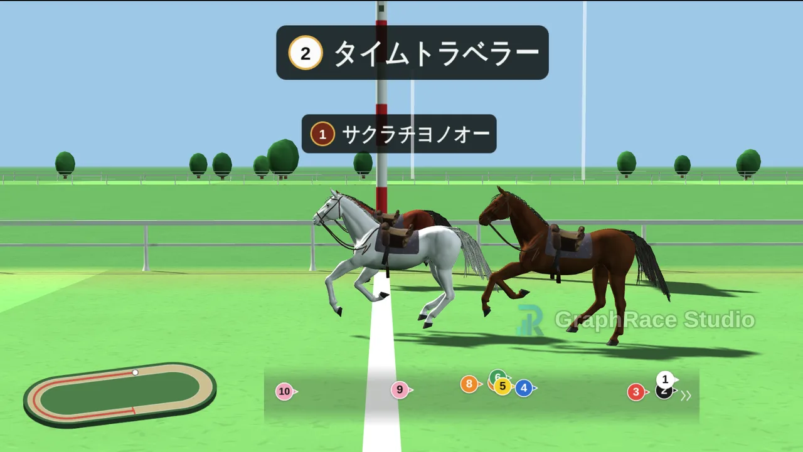
ランキングの発表は、順位が分かった瞬間より、分かるまでの時間のほうが面白いものです。競馬中継の形にすると、この「分かるまで」を最後の直線まで引き延ばせます。
格付けダービーは、順位を決めて走らせるだけで競馬中継風のランキング発表動画が作れる無料ツールです。道中の展開は毎回ランダムに変わりますが、ゴールの着順は必ず指定どおりになります。さらに、軽快な2Dの「競馬風」と、3DCGの馬が実際の競馬場のようなコースを走る「リアル競馬風」を、ボタンひとつで切り替えられます。
この記事では開発者の立場から、2つのモードの全設定項目と、どちらを選ぶべきかの判断基準、そして動画として書き出すまでの手順を、実際の画面とあわせて解説します。
格付けダービーでできること・できないこと
はじめに、ツールの性格をはっきりさせておきます。格付けダービーは「発表の演出」に特化したツールで、数値データを可視化するツールではありません。
- アンケート結果や人気投票の1位発表
- 子供向けのお楽しみ会・教室のレクリエーション
- 社内表彰・部活・サークルの成績発表
- 推し対決、身内ネタの「勝手にグランプリ」
- 順位に根拠がない主観ランキング
- 架空のレースを再現するシミュレーション
- 数値の大小や差を正確に伝えたいとき
- 時系列で順位が入れ替わる推移の可視化
- 17項目以上の大量発表
- 音声・BGMまで一体で書き出したいとき
数値そのものを見せたい場合はバーチャートレース、勝ち上がり構造を見せたい場合はトーナメント表のほうが適しています。演出タイプ全体の比較は順位発表動画の作り方にまとめてあります。
- ブラウザだけで動作。インストール・会員登録は不要です
- 入力した名前や画像は外部に送信されません（すべてブラウザ内で処理）
- 設定はブラウザに自動保存され、次に開いたときに復元されます
- 出走馬は2〜16頭。名前は10文字までです
- 動画の書き出し形式はWebM（MP4は非対応）
- BGM・効果音は付きません（動画編集側で足す前提です）
基本の流れは3ステップ
ツールを開くと、左に設定パネル、右にプレビュー画面が並んだ画面が表示されます。作業はこの左パネルを上から順に埋めていくだけです。
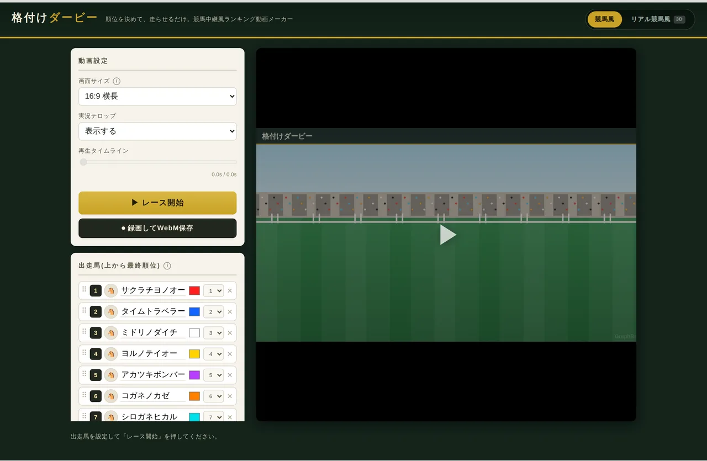
- 出走馬を入力する名前を入れて、上が1位になるようドラッグで並べ替えます。
- 表現とレースを設定する「競馬風」か「リアル競馬風」を選び、尺・展開・レース名を決めます。
- 走らせて保存するプレビューで確認し、気に入ったら録画してWebMで保存します。
ここからは、各ステップの設定項目を1つずつ見ていきます。
STEP1：出走馬を設定する
「出走馬(上から最終順位)」のパネルが、このツールでいちばん重要な部分です。ここに並んでいる順番が、そのままゴールの着順になります。
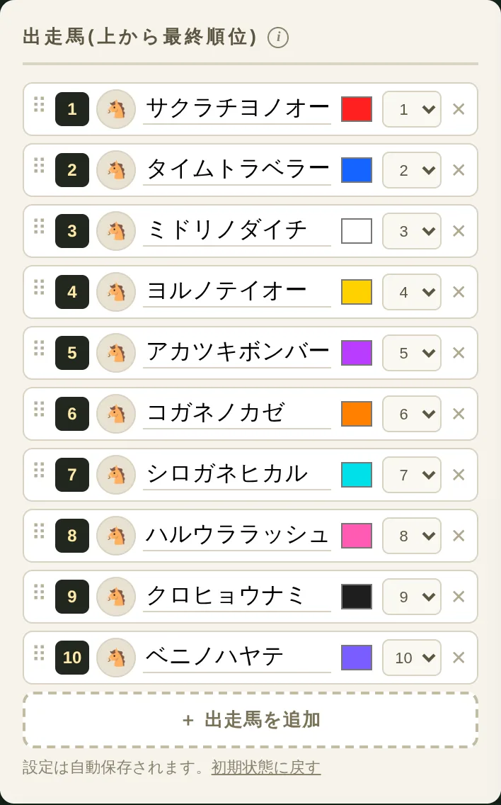
名前と順位
テキスト欄に発表したい項目名を入力します。名前は10文字までで、初期状態では架空の競走馬名が入っています。順位を入れ替えるときは、行の左端にある「⠿」マークをドラッグしてください。行そのものを掴んでも動かないので注意します。
頭数は「＋ 出走馬を追加」で増やし、右端の「✕」で減らします。2頭から16頭まで設定できます。
枠番（左の数字）
着順とは別に、画面のどこを走るかを決める番号です。着順と枠番は独立しているので、「1位の馬を大外から走らせる」といった配置も作れます。何も触らなければ着順と同じ並びになります。
馬体色とアイコン画像
色見本をクリックすると馬体の色を変えられます。初期の16色は、芝の緑と競合せず、同系色どうしも明度で見分けられるよう選ばれています。並べ替えても色は馬に付いたままなので、順位を入れ替えても見た目が崩れません。
馬アイコン（🐴）をクリックすると、画像ファイルを設定できます。設定した画像は結果発表の掲示板に表示されます。ロゴや人物の顔写真を入れると、誰の順位かがひと目で分かるようになります。
3DCGの馬に画像を貼ることはできないため、アイコン画像は「競馬風」（2D）専用の機能です。設定自体は消えないので、2Dに戻せばそのまま反映されます。
脚質と毛色（3Dモードのみ）
「リアル競馬風」に切り替えると、各行に脚質の選択肢が増えます。脚質は道中の位置取りを決める設定で、大逃げ・逃げ・先行・差し・追込の5種類と「自動」から選べます。「自動」なら抽選で決まり、大逃げは出ても1頭だけになります。
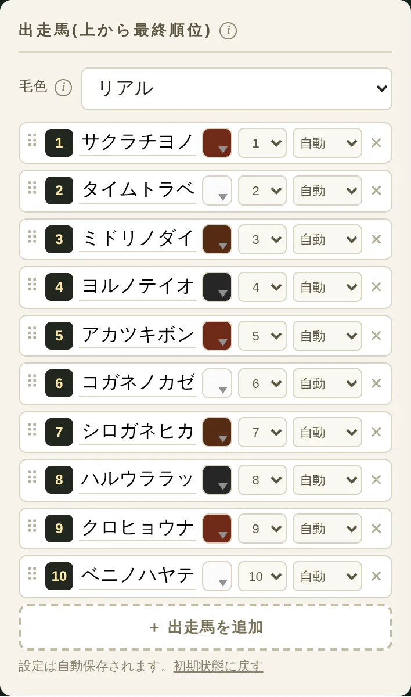
リストの上にある「毛色」は、3Dの馬の見た目を決める設定です。
| 毛色パターン | 見た目 | 向いている場面 |
|---|---|---|
| リアル | 鹿毛・芦毛・青鹿毛・青毛の4種類から選ぶ | 本物の競馬らしさを優先したいとき |
| カラー | 白い毛並みに馬体色を乗せる | 16頭すべてを確実に見分けたいとき |
毛色を「リアル」にすると本物らしくなりますが、4色しかないため頭数が多いと見分けがつきにくくなります。6頭以上なら「カラー」が無難です。なお、どちらを選んでも、もう一方の色設定は消えません。
STEP2：レースを設定する
出走馬が決まったら、表現とレースの設定に進みます。まず、ツール上部のボタンで2Dか3Dかを選びます。
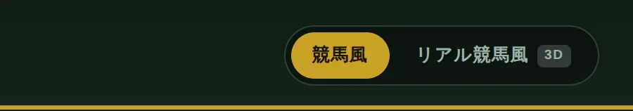
「競馬風」（2D）のレース設定
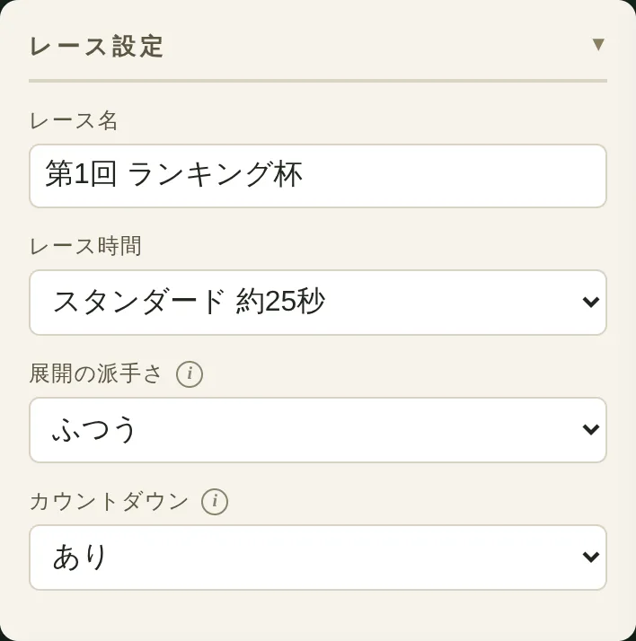
| 設定項目 | 選べる値 | ポイント |
|---|---|---|
| レース名 | 24文字まで自由入力 | 画面左上と結果掲示板に表示されます |
| レース時間 | 約15秒／約25秒／約40秒 | 頭数が多いほど長めが見やすくなります |
| 展開の派手さ | おだやか／ふつう／波乱／大波乱 | 道中の順位変動の大きさ。着順は変わりません |
| カウントダウン | あり／なし | スタート前に3秒のカウントを入れます |
「展開の派手さ」は、道中の見せ場をどれだけ作るかの設定です。「大波乱」では大逃げ・大まくり・失速まで起こりますが、それでもゴールの着順は設定どおりです。ランキングの信頼性を印象づけたいときは「おだやか」、盛り上げたいときは「波乱」以上が向いています。
2Dモードだけの設定として、「動画設定」パネルに実況テロップの表示／非表示があります。「〇〇がレースを引っ張る展開!」のような文字が道中に表示される機能で、字幕を自分で入れたい場合は非表示にしてください。
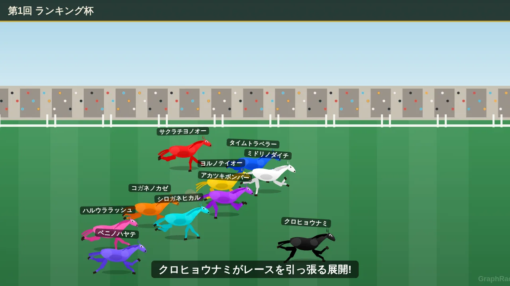
「リアル競馬風」（3D）のレース設定
3Dモードでは、尺の決め方が根本的に変わります。秒数ではなく「コース」を選び、その距離と実際の馬の走行速度から動画の長さが決まります。
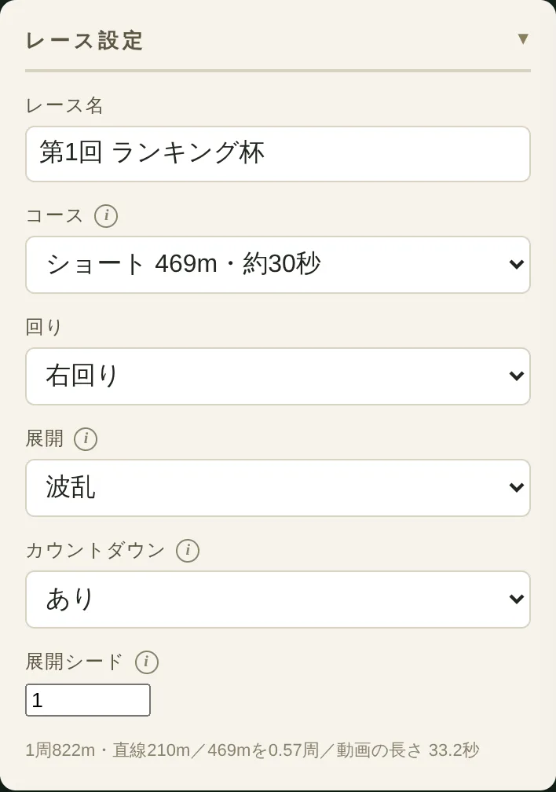
| 設定項目 | 選べる値 | ポイント |
|---|---|---|
| コース | ショート 469m（約30秒）／小回り 1000m（約61秒）／広い 2400m（約2分27秒） | 距離がそのまま動画の長さになります |
| 回り | 右回り／左回り | カメラワークも左右反転します |
| 展開 | 波乱／リアル | 波乱は見せ場を作り、リアルは脚質どおりに走ります |
| 展開シード | 0〜99999の数字 | 同じ数字なら同じレースが再現されます |
「展開」の2つは性格がはっきり違います。「波乱」は演出重視で、直線での叩き合いなどドラマが起きるように調整されます。「リアル」は実戦のシミュレーションに近く、各馬が脚質どおりの役割を最後まで貫くため、序盤から中盤は団子のまま大きな動きが出ません。動画として盛り上げたいなら「波乱」、競馬らしさを優先するなら「リアル」です。
気に入った展開が出たら、そのときのシード値を控えておけば同じレースを再現できます。逆に「着順は変えたくないが、道中がつまらない」ときは、シードの数字を1つずつ変えて走らせ直すのが最短です。
コース選びの目安
ショート（約30秒）はSNS投稿向けで、向正面スタート→ワンターン→最終直線という構成です。小回り（約61秒）はコースをちょうど1周し、競馬中継らしいカメラの切り替わりを一通り味わえます。広い（約2分27秒）は本格的ですが、ランキング発表としては長すぎることが多いため、イベント会場での上映など「待たせること自体が演出になる」場面向けです。
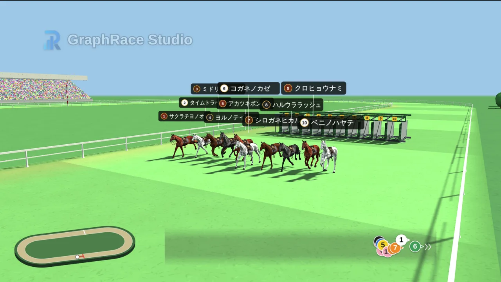
画面表示（3Dのみ）
3Dモードには「画面表示」パネルがあり、画面に重ねる情報を3つ切り替えられます。
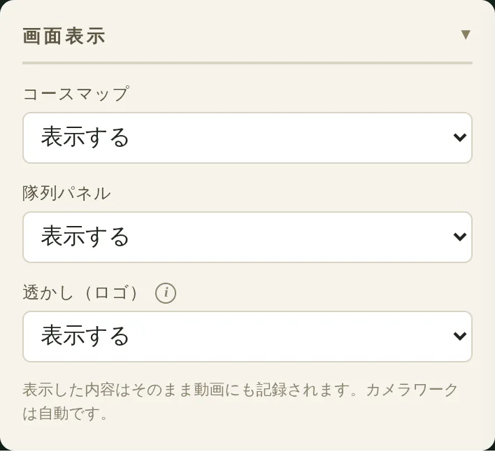
- コースマップ：左下に出るコース全体の俯瞰図。現在位置と走った軌跡が表示されます
- 隊列パネル：中央下に出る位置関係の表示。先頭を右端、最後尾を左端に固定し、隊列の実際の長さを全幅に対応させています
- 透かし（ロゴ）：画面を流れる「GraphRace Studio」のロゴ
縦型（9:16）で作る場合は、画面が狭くなるぶんコースマップと隊列パネルを消したほうがすっきりします。
スタート全景から、コーナー、向正面の分割画面、最終直線、ゴール真横までのカメラ切り替えはJRA中継を参考に固定してあります。ユーザーが変更できるのは馬とレースの設定だけで、そのぶん誰が作っても中継らしい画になります。
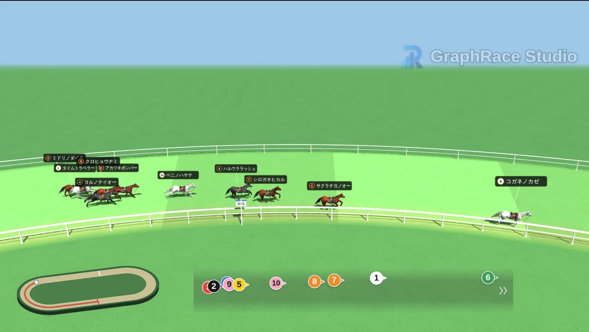
2Dと3Dの違い・使い分け早見表
どちらを選ぶか迷ったときのために、違いを整理します。
| 比較項目 | 競馬風（2D） | リアル競馬風（3D） |
|---|---|---|
| 読み込み | 開いてすぐ使える | 初回のみ約4MBを読み込む |
| 動作の軽さ | 軽い（スマホでも安定） | 端末の性能による |
| 尺の決め方 | 秒数を選ぶ（15／25／40秒） | コース距離で決まる（約30秒／約61秒／約2分27秒） |
| カメラ | 真横からの固定 | 中継風に自動で切り替わる |
| 全頭の位置把握 | 常に画面内に収まる | 隊列パネルで補助する |
| 脚質の指定 | できない | 5種類＋自動から選べる |
| アイコン画像 | 使える | 使えない |
| 実況テロップ | 使える | 使えない |
| 画面サイズ | 16:9／3:4／9:16 | 16:9／1:1／9:16 |
| 向いている例 | 子供向けのお楽しみ会、教室やクラブのレクリエーション、頭数の多いランキング、スマホだけで作りたいとき | SNS向けの見栄え重視の投稿、競馬ファンに向けた企画、配信やイベントでの結果発表 |
横にスクロールできます
- 子供向けのお楽しみ会で使う／16頭など頭数が多い／アイコン画像を出したい／スマホで完結させたい → 競馬風（2D）
- 見栄えを最優先したい／競馬らしい展開を作りたい／同じ展開を再現したい → リアル競馬風（3D）
出走馬・レース名・カウントダウン・結果発表設定は2つのモードで共通なので、同じ顔ぶれのまま両方を試して見比べるのがおすすめです。レース時間とコース、展開の設定など仕組みが違う項目は、それぞれのモードで別々に記憶されるので、行き来しても設定は失われません。
STEP3：レースを走らせて動画に保存する
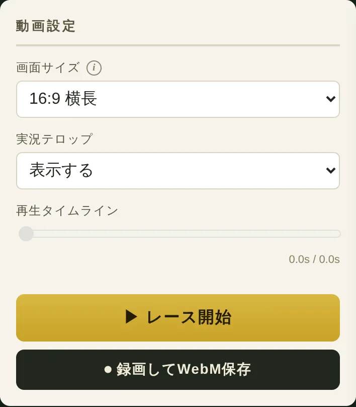
まずプレビューで展開を確認する
「▶ レース開始」を押すとプレビューが始まります。再生中は同じボタンが「⏸ 一時停止」に変わり、その下の再生タイムラインを動かせば好きな時点に移動できます。決定的な場面だけを繰り返し確認したいときに便利です。
展開が気に入らなければ、もう一度「レース開始」を押すだけで引き直せます。何度走らせても着順は変わりませんので、納得いくまで試してください。3Dなら展開シードを変えるほうが確実です。
録画してWebMで保存する
「⏺ 録画してWebM保存」を押すと、レース開始と同時に録画が始まり、結果掲示板まで終わったところで動画ファイルが自動的にダウンロードされます。別途キャプチャソフトを用意する必要はありません。
- 形式はWebM（VP9・30fps）です。MP4が必要な場合は変換してください
- 録画中はタブを切り替えないでください。描画が止まりコマ落ちすることがあります
- 画面に出ている表示はそのまま記録されます。透かしを消したい場合は、録画前に「画面表示」で設定します
- 音声は含まれません。BGMや効果音は編集ソフトで足してください
YouTubeとX（旧Twitter）はWebMをそのまま投稿できます。TikTokやInstagram、PowerPointへの貼り付けなどMP4が必要な場面では、動画編集ソフトや無料の変換ツールでMP4（H.264）に書き出し直してください。会場で上映する場合は、事前に再生機材で試写しておくと安心です。
縦型（9:16）で作る場合
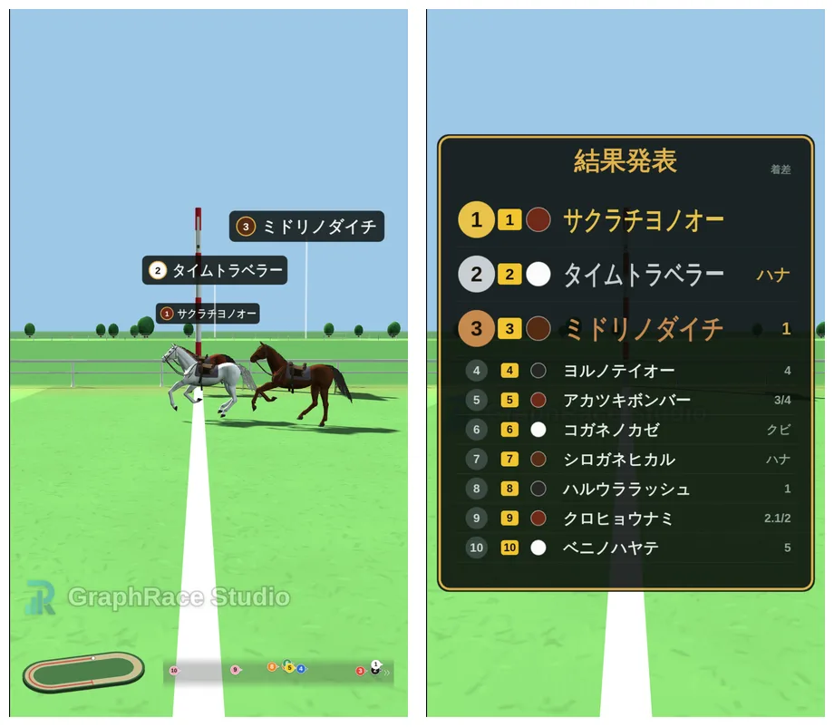
「動画設定」の画面サイズを9:16にすると縦型で書き出せます。縦型は横幅が狭いぶん、馬同士が重なって見えやすくなります。8頭以下に絞る、コースマップと隊列パネルを消す、といった調整をすると見やすくなります。
結果発表画面をカスタマイズする
ゴール後に表示される結果掲示板も、「結果発表設定」パネルで調整できます。動画のいちばん美味しい部分なので、ここは丁寧に設定する価値があります。
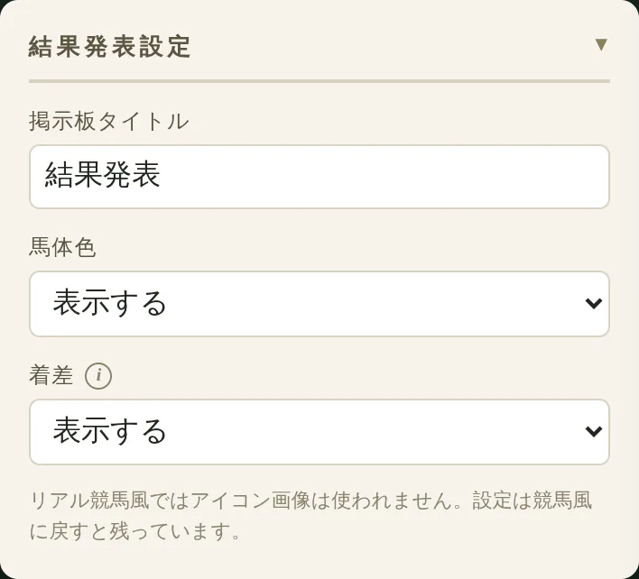
- 掲示板タイトル：「最終結果」「2026年上半期ベスト10」など、内容に合わせて変更できます
- 馬体色：各行に色の丸を表示するかどうか。どの馬だったか分かりやすくなります
- アイコン画像：設定した画像を掲示板に表示します（2Dのみ）
- 着差：1つ上の馬との差を「ハナ」「クビ」「1馬身」など競馬の表記で表示します
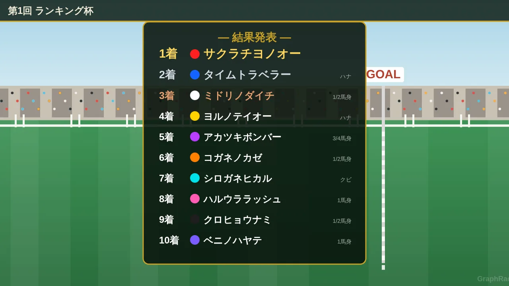
着差の表示は、接戦だったことを一言で伝えられるのが利点です。「ハナ差」と出るだけで最後の競り合いに意味が生まれます。逆に、順位の差を強調したくない主観ランキングでは非表示にしたほうが角が立ちません。
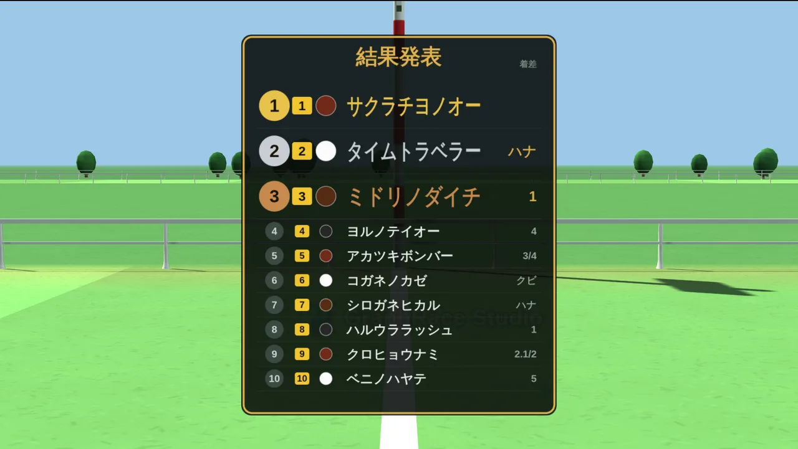
仕上がりが変わるコツ6つ
1. 名前は短く、記号を混ぜない
名前は10文字までですが、走行中の名前ラベルは小さく表示されます。実際には6〜8文字に収めると読みやすくなります。長い項目名は「〇〇株式会社」→「〇〇」のように略しましょう。
2. 頭数は8頭前後が最も見やすい
16頭まで設定できますが、全頭を追える上限は実質8頭ほどです。それ以上ある場合は、上位8項目だけをレースにして、残りは静止画のリストで補足する構成が効きます。
3. 色は「隣り合う順位」で離す
初期の16色は見分けやすく並べてありますが、色を変えるときは1位と2位、2位と3位のように隣り合う順位の色を離すのがコツです。ゴール前で並んだときの見分けやすさが変わります。
4. 3Dなら脚質で物語を作る
1位の馬を「追込」に設定すると、最後方から差し切る展開になり、直線での逆転劇が生まれます。逆に1位を「逃げ」にすると、序盤から先頭を守り切る横綱相撲になります。同じ順位でも脚質次第で動画の意味が変わるので、発表したい内容に合わせて選んでください。
5. カウントダウンは会場向け、SNSでは切る
3秒のカウントダウンは会場での上映では期待感を作りますが、SNSのタイムラインでは冒頭3秒が離脱の分かれ目です。ショート動画では「なし」にして、いきなり走り出すほうが最後まで見てもらえます。
6. BGMと効果音は後から足す
このツールは音声を出力しません。逆に言えば、音は完全に自由に設計できます。ファンファーレをスタートに、実況風のBGMを道中に、ゴールの瞬間にシンバルを合わせるだけで、体感の盛り上がりは大きく変わります。素材の選び方は順位発表動画の作り方にまとめています。
よくある質問（FAQ）
格付けダービーは無料ですか？商用利用もできますか？
無料で使えます。会員登録もインストールも不要で、YouTubeやTikTokへの投稿、社内イベントでの上映を含む商用利用も可能です。事前連絡は不要ですが、動画内か概要欄でのクレジット表記にご協力をお願いしています。
途中の展開はランダムなのに、順位は指定どおりになりますか？
なります。道中の位置取りは毎回変わりますが、ゴールの着順は出走馬リストの並び順で固定されています。何度走らせても1位は1位のままなので、結果を気にせず展開だけを引き直せます。
「競馬風」と「リアル競馬風」で設定はやり直しになりますか？
なりません。出走馬（名前・順位・枠番・馬体色・脚質）とレース名、カウントダウン、結果発表設定は2つのモードで共通です。レース時間とコース、展開の設定、一部の画面サイズなど仕組みが異なる項目は、それぞれのモードで別々に記憶され、戻ると元の状態に復元されます。
動画はどの形式で保存されますか？MP4で欲しい場合は？
WebM形式（VP9・30fps）で保存されます。MP4しか受け付けない編集ソフトやSNSに投稿する場合は、無料の変換ツールや動画編集ソフトの書き出し機能でMP4に変換してください。YouTubeとX（旧Twitter）はWebMのまま投稿できます。
「リアル競馬風」に切り替えると読み込みに時間がかかります。
3Dモードでは馬のCGモデルなど約4MBのデータを読み込むため、初回だけ数秒かかります。2回目以降はブラウザのキャッシュから開くのですぐ表示されます。このデータは3Dを選んだときに初めて読み込まれるので、2Dだけを使う場合はページの表示速度に影響しません。
縦型（9:16）のショート動画も作れますか？
作れます。「動画設定」の画面サイズで9:16を選ぶと縦型で書き出せます。2Dでは3:4、3Dでは1:1も選べます。縦型では画面に入る頭数が減るため、8頭以下に絞ると見やすくなります。
同じ展開をもう一度再現できますか？
リアル競馬風なら再現できます。「展開シード」の数字が同じであれば、何度走らせても同じレースになります。数字を1つ変えれば、着順はそのままで道中の展開だけが変わります。
作ったデータは外部に送信されますか？
送信されません。出走馬の名前やアイコン画像を含め、処理はすべてブラウザの中で完結します。設定はお使いのブラウザに自動保存され、次に開いたときにそのまま復元されます。別の端末には引き継がれない点にはご注意ください。
スマートフォンでも作れますか？
作れます。ただし3Dモードはリアルタイムに3D描画を行うため、端末によっては動作が重くなります。スマホで作業する場合は2Dの「競馬風」のほうが安定します。
まとめ
格付けダービーの使い方を、最後に3行で整理します。
- 出走馬リストの並び＝最終着順。ドラッグで決めれば、あとは何度走らせても結果は変わらない
- 2Dは軽さと分かりやすさ、3Dは見栄えと競馬らしさ。出走馬は共通なので両方試して選べる
- 録画はWebM・音声なし。BGMと効果音は編集側で足す前提で作ると仕上がりが伸びる
ランキング発表で大事なのは、順位そのものより「発表される瞬間までの時間」です。競馬中継の形は、その時間を最後の直線まで引き延ばすための、もっとも実績のある型のひとつだと思っています。まずは初期設定のまま一度走らせて、感触を確かめてみてください。